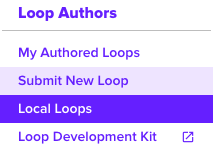
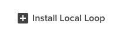
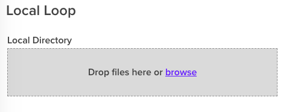

LDK Development
New Loop: Getting Started
Installing the LDK
Install the LDK from npm:
npm i @oliveai/ldkProducing Loop Compilations
We recommend using Webpack 5 to compile your Loop code for you. Our Webpack configuration includes support for Typescript, and generates the Loop metadata required for installation.
Using Our Configuration As-Is
Install Webpack 5 and its CLI, and add this build script to your package.json:
webpack --entry ./index.js --config ./node_modules/@oliveai/ldk/dist/webpack/config.jsThis will use the LDK webpack configuration and compile the file to the ./dist/loop.js directory.
Extending the Configuration
If you want to extend the Webpack configuration, create a webpack.config.js file and use webpack-merge to extend it:
const path = require('path');
const merge = require('webpack-merge');
const ldkConfig = require('@oliveai/ldk/dist/webpack/config');
const merged = merge.merge(ldkConfig.default, {
entry: [path.resolve(__dirname, './index.js')],
});
module.exports = merged;Development Builds
We also provide a development Webpack configuration, which offer faster builds in exchange for increased build size:
webpack --entry ./index.js --config ./node_modules/@oliveai/ldk/dist/webpack/config.development.jsconst path = require('path');
const merge = require('webpack-merge');
const ldkConfig = require('@oliveai/ldk/dist/webpack/config.development');
const merged = merge.merge(ldkConfig.default, {
entry: [path.resolve(__dirname, './index.js')],
});
module.exports = merged;VSCode Extension
If you prefer to use VSCode, you can install our VSCode extension to generate boilerplate code for Olive Helps Loops.
React Whispers
We've added support for writing and updating Whispers with React to the LDK. Visit the documentation for details on how to use it.
Loading a Local Loop Into Olive Helps
Once you have generated the Loop using the above steps into your ./dist/loop.js directory, you can now load it into Olive Helps to test.
- Open up Olive Helps and authenticate
- Click "Loop Library"

- Click "Local Loops"

- Click "Install Local Loop"

- Fill out the required Loop data, and browse to your
./distdirectory via the "Local Directory" dialog

You will see a toast within Olive Helps if your Loop was started.
Loop Permissions
In order to ensure your Loop is executing in a secure manner, you must declare which network URL domains, file system path globs, and aptitudes your Loop will use.
Permissions are declared inside of the Loop package.json root within a ldk/permissions json object.
The included LDK Webpack configuration allows Loop authors to configure alternate permissions for different development environments. See the Permissions Configuration guide on the Olive Helps Developer Hub for more information.
"ldk": {
"permissions": {
"clipboard": {},
"filesystem": {
"pathGlobs": [
{
"value": "/some/path/something.txt"
}
]
},
"network": {
"urlDomains": [
{
"value": "*.google.com"
}
]
},
"window": {}
}
},Network Permission:
Any domain URL reference. Supports domain wildcards.
"ldk": {
"permissions": {
"network": {
"urlDomains": [
{
"value": string
}
]
}
}
}Examples
| Value |
|-----------|
| "*.google.com" |
| "github.com/" |
| "en.wikipedia.org" |
Filesystem Permission:
Any filesystem path. Supports path wildcards. All filesystem permissions include access to the Loop's working folder by default.
"ldk": {
"permissions": {
"filesystem": {
"pathGlobs": [
{
"value": string
}
]
}
}
}Examples | Value | |-----------| | "/some/path/something.txt" | | "/Users/ldkuser/Desktop/*" |
If your Loop only needs access to the Loop's working folder, provide an empty object:
"ldk": {
"permissions": {
"filesystem": {}
}
}User Permission:
Any optional claims which your Loop needs to use. At this time, there is only one supported optional claim: email.
"ldk": {
"permissions": {
"user": {
"optionalClaims": [
{
"value": string
}
]
}
}
}Examples | Value | |-----------| | "email" |
If your Loop only needs access to the default set of JWT claims, provide an empty object:
"ldk": {
"user": {}
}Aptitude Permission:
An Aptitude Name.
"ldk": {
"clipboard": {},
"process": {}
}| Valid Options | ||
|---|---|---|
| "clipboard" | "cursor" | "keyboard" |
| "process" | "ui" | "system" |
| "vault" | "whisper" | "window" |
Loop Examples
Examples are provided in the ldk/javascript/examples/ directory. These examples include more information about creating and building Loops.
Guidelines and Warnings
- The Goja runtime is not the same thing as the Node runtime, and built-in Node modules (like
fs,path) are not available. - You can install npm packages and use them in your code, however Webpack will not throw a compilation error if a package you import requires a Node built-in module. Instead it will generate an error at runtime.
- Olive Helps expects that the compilation folder is empty besides the
loop.jsfile. - Multiple file chunks are not supported.